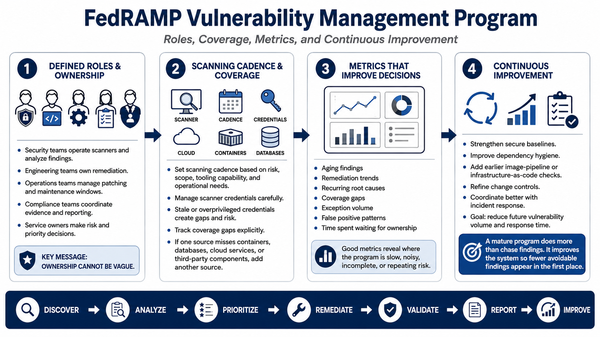

Program Operations and Continuous Improvement
Connecting to LMS... Progress: in progress

Narration
A vulnerability management program needs defined roles and responsibilities. Security teams may operate scanners and analyze findings. Engineering teams may own remediation. Operations teams may manage patching and maintenance windows. Compliance teams may coordinate evidence and reporting. Service owners may make risk and priority decisions. The exact model can vary, but ownership cannot be vague.
Scanning cadence should be based on risk, scope, tooling capability, and operational needs rather than a hardcoded habit. Scanner credential management matters because stale or overprivileged credentials can create coverage gaps or security risk. Coverage gaps should be tracked explicitly. If containers, databases, cloud services, or third-party components are not covered by one source, another source may be needed.
Metrics should help improve decisions. Useful metrics may include aging findings, remediation trends, recurring root causes, coverage gaps, exception volume, false positive patterns, and time spent waiting for ownership. The point is not to create dashboards for their own sake. The point is to understand where the program is slow, noisy, incomplete, or repeatedly creating the same risk.
Continuous improvement reduces future vulnerability volume and response time. Lessons learned may lead to stronger secure baselines, better dependency hygiene, improved infrastructure-as-code checks, earlier image pipeline scanning, clearer change controls, or better coordination with incident response. A mature program does not only chase findings after they appear. It improves the system so fewer avoidable findings appear in the first place.